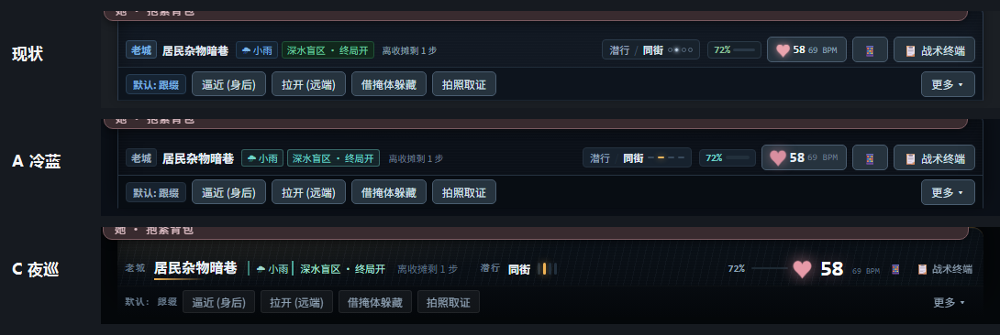
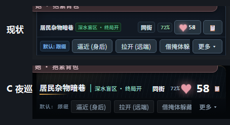
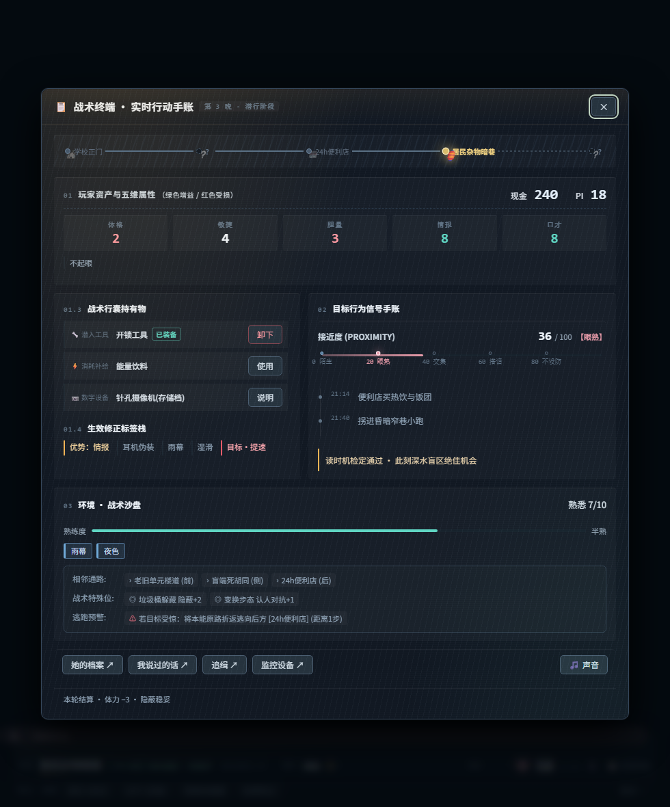
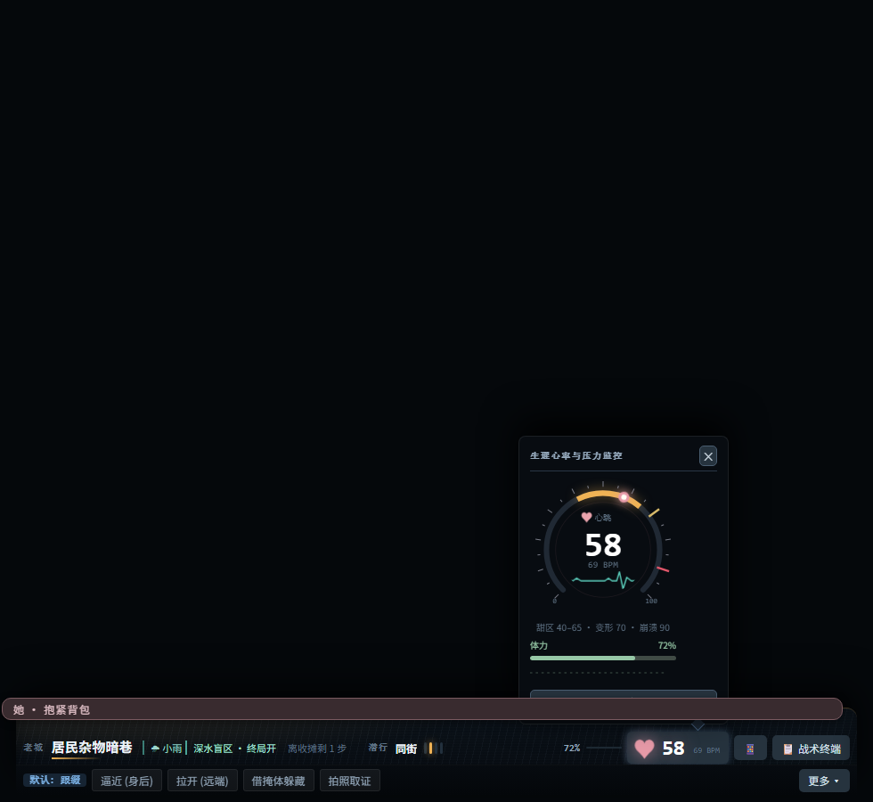

尾行状态栏 · P1 设计预览
三套真渲染对照：现状 / A 冷蓝（收敛色板，保守） / C 夜巡（重做语言，大胆）。
渲染方式是给 状态栏.html 的副本注入覆盖层，项目文件一个字没动。
一、常驻条对照（980）

自上而下：现状 → A 冷蓝 → C 夜巡
二、手机 390

390px：路牌 → 红线 → 距离 → 体力 → 心跳 → 终端
三、C 案做了什么（六个大动作）
- 去掉描边，用光做结构：整条变成一张贴着输入栏的胶片，顶缘一根钠黄发丝光，底部沉入黑。原先十几处 1px 边框全部撤掉。
- 状态不再是 chip，是天气：终局封 ＝ 整条顶光变红；心跳过线 ＝ 底部内发光泛暖；崩溃 ＝ 红色搏动。她要不要动手，一眼就能"感觉到"。
- 左半是一块路牌：大区缩成 9.5px 字距拉开的等宽上标，场所名 15px 加重，底下一道渐隐的钠黄灯带。
- 距离档改成四根竖刻度：亮的那格发钠黄光，比原来的 5px 圆点读得出"第几档"。
- 心跳成为唯一主角：♥ 19px、数字 24px、BPM 退到 9px。整条上最亮的东西从"战术终端按钮"变成心跳。
- 胶囊去掉按钮皮：极淡底 + 幽灵描边保留可点感，选中用一条 2px 底部光，危险动作只染字色。
四、终端（C 案同一套语言）

卡片无框、只有顶发丝线；五维 20px 大字；标签改成左侧 2px 色条的文字；导航退成纯文字
五、心跳仪表盘

甜区＝钠黄（升温）、ECG＝青（生理）、指针＝她
六、Token 层
--ink-0#070b10 底
--ink-1#0d141c 卡片
--ink-2#131c26 控件
--line#1d2833 分割
--t-hi#eef4fa 主文字
--t-mid#93a7ba 次文字
--t-low#5f7284 说明/上标
--heat甜区 / 优势 / 钠灯
--safe增益 / 可动手
--danger封锁 / 失败
--her她
语义约束：一个颜色只表达一件事；灰阶负责层级，彩色只负责状态。
七、C 案还欠的（未做，等你点头）
- 图标仍是 emoji（📱 📋 🌧）——C 案这层语言对彩色 emoji 特别不兼容，必须换单色 SVG（P1-c）。
- 雨丝只做了静态纹理，动势要真机才能看（CSS 动画，不耗性能）。
- 状态染色用了
:has()：Chromium 105+/Safari 15.4+ 生效；旧 webview 只是不染色，不会坏。
- 390 宽时 ♥ 与体力贴得偏紧，落地时要补一条 ≤430 的微调。